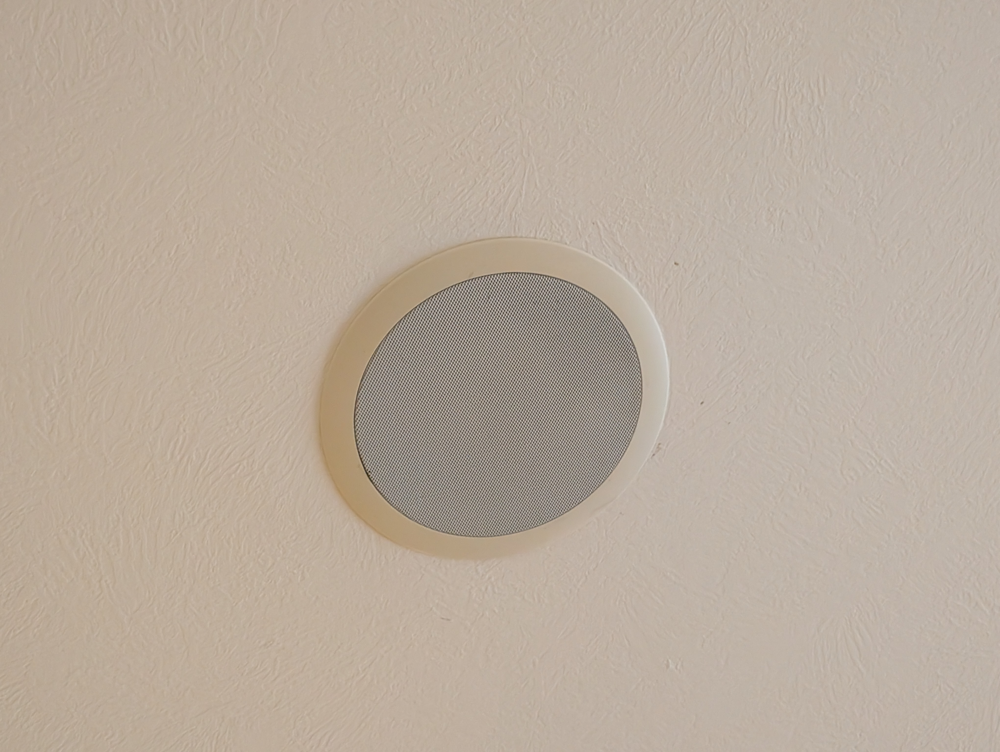
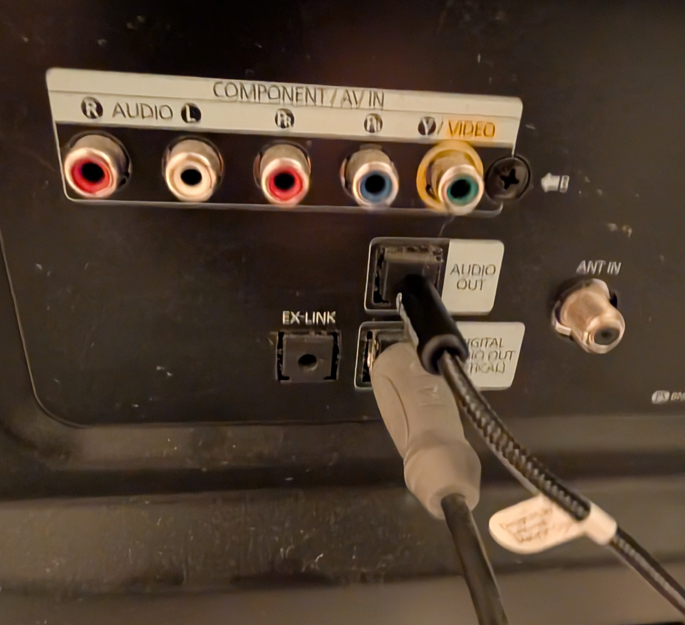
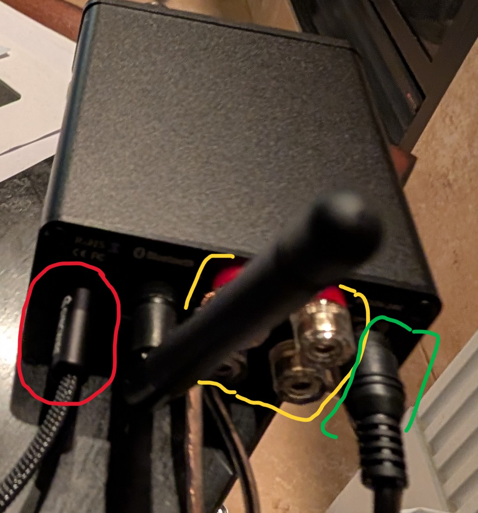
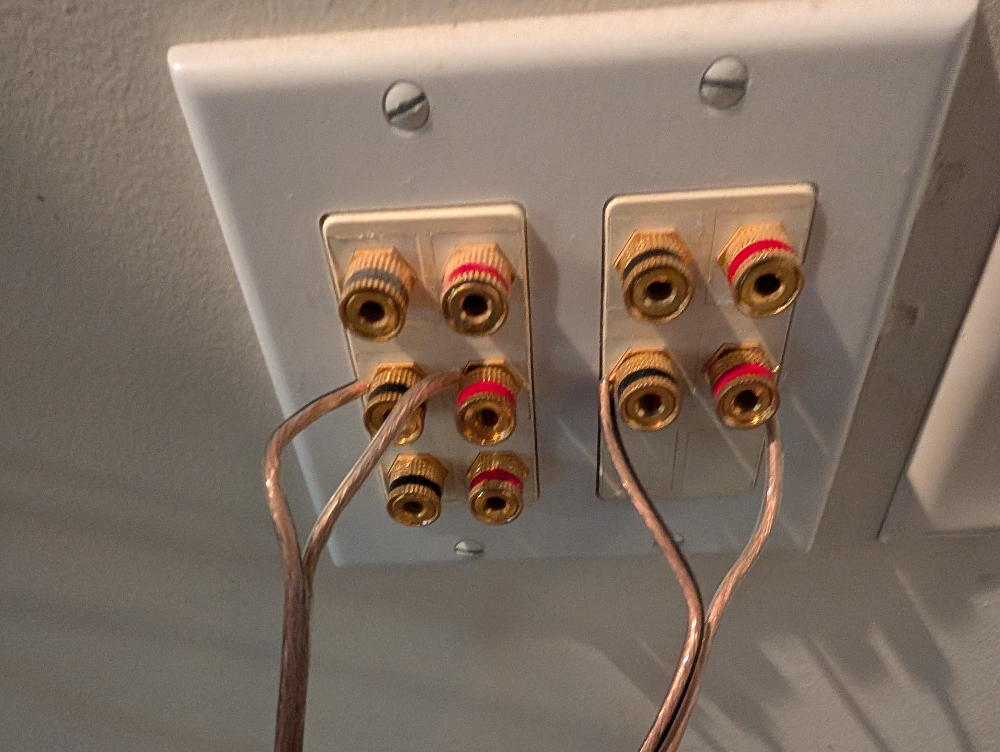
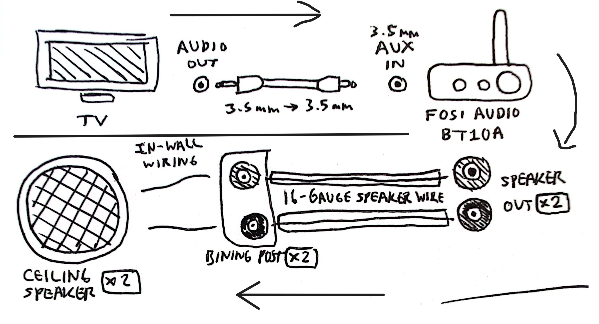
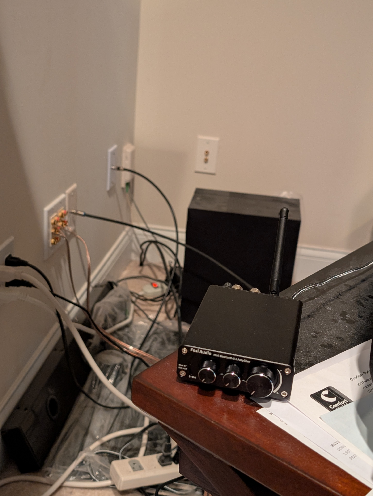
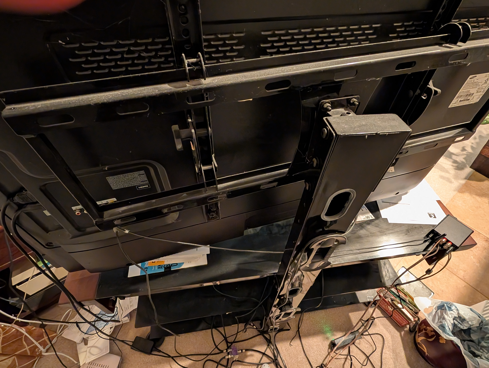

Hardware projects I've done
Page under construction
Page under construction. In the mean time, here's a dump of some images:
For ages, there were two in-ceiling speakers that we never utilized. The goal of this project was to connect our television to these speakers to create a surround-sound system.
There are three main components to a surround-sound system: the television being the source of audio, the two ceiling speakers, and a connection that runs from the audio TV output to the binding posts corresponding to the speakers.
Two of the components were preexisting: the TV and the speakers, meaning that I have to provide the connection.

As for the connection, an amplifier is necessary to convert the TV's audio signal to something viable for the speaker, lest the output be extremely faint or nonexistant. The amp I opted for is the Fost Audio BT10A Bluetooth 5.0 Stereo. Having a 3.5 MM AUX input and outputs for two speakers, it was a cheap and reliable option for my purposes.
A 3.5 mm Nylon Aux Cable can make the TV output -> amp input connection, and speaker wire can make the amp output to binding post connection.



The outlet contains five total binding post pairs to allow for any potential expansion of the audio system. However, since only two of the five were connected, I used a multimeter to measure the resistance between each pair's poles; a reading of ~8 ohms indicates that that pair goes to one of the speakers; a max reading indicates that the pair is an open circuit.
All of this makes for a circuit like this:

Implementation of the surround-sound system was successful and functionality is good. The amp even supports Bluetooth to boot!


